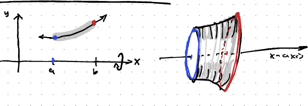
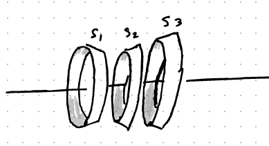
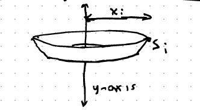
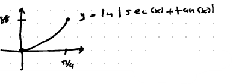
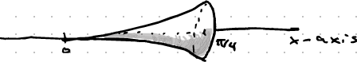
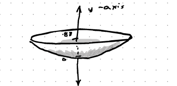

To find the length of a curve $y=f(x)$ on $[a,b]$, we can approximate it by breaking the curve into small straight line segments.
The distance $s_i$ between points $(x_{i-1}, f(x_{i-1}))$ and $(x_i, f(x_i))$ forms a right triangle.
Factoring out $(\Delta x)^2$:
$$ (s_i)^2 = \left( 1 + \left(\frac{\Delta y}{\Delta x}\right)^2 \right) (\Delta x)^2 $$ $$ s_i = \sqrt{1 + \left(\frac{\Delta y}{\Delta x}\right)^2} \cdot \Delta x $$Taking the limit as $n \to \infty$, the sum of these segments becomes our integral formula:
Find the length of $y = x^{3/2}$ on $[0,1]$.
When we rotate a curve about an axis, we get a surface. A small line segment $s_i$ rotated around an axis creates a narrow band (which is a frustum of a cone).


Using the radius $f(x_i)$ and the slant length $s_i = \sqrt{1+(f'(x_i))^2}\Delta x$, the sum becomes an integral:
What about rotating about the y-axis? The radius of revolution changes to $x$ instead of $f(x)$.

Find integrals for the length of $y = \ln|\sec(x)+\tan(x)|$ on $[0, \pi/4]$. Then find integrals for the surface area when rotating about the x-axis and y-axis. (Do not evaluate integrals).
First, find the derivative $f'(x)$:
1) Arc Length Setup:

2) Surface Area about the x-axis Setup:

3) Surface Area about the y-axis Setup:
